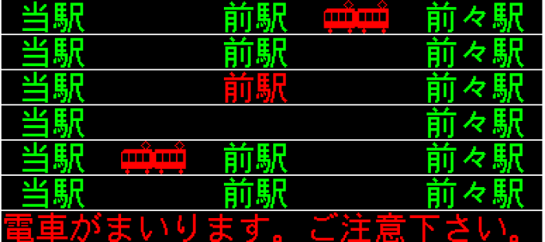

Tokyo
Underground
1
Shinjuku Station


ㅡ
악명 높은 신주쿠역?
신주쿠역은 16개의 노선이 지나다니며, 하루 평균 300만명이 이용하는 부도심이다. 도쿄의 교통중심지로서, 숙박하기 최적인 위치이고 또 쇼핑을 할 수 있는 상점가들과 유흥을 즐길 수 있는 곳들이 많다. 그러나 그만큼 신주쿠는 무척 복잡하고 길을 잃기로 악명 높은 곳이다. 가령 구글 맵을 이용하더라도 지하이고, 현 위치가 정확히 파악되지 않아서 헷갈리기 쉽상이다.
그렇지만 겁먹지 말고 쉽게 정리하면 시간 낭비 하지 않고 나갈 수 있다.일본의 출구는 보통 동서남북을 중심으로 되어 있다. 쉽게 2층, 1층, 지하 1층을 기준으로 설정하고, 나의 목적에 따라 어느 출구로 나갈지만 정하면 어렵지 않게 목적지에 도착할 수 있다.